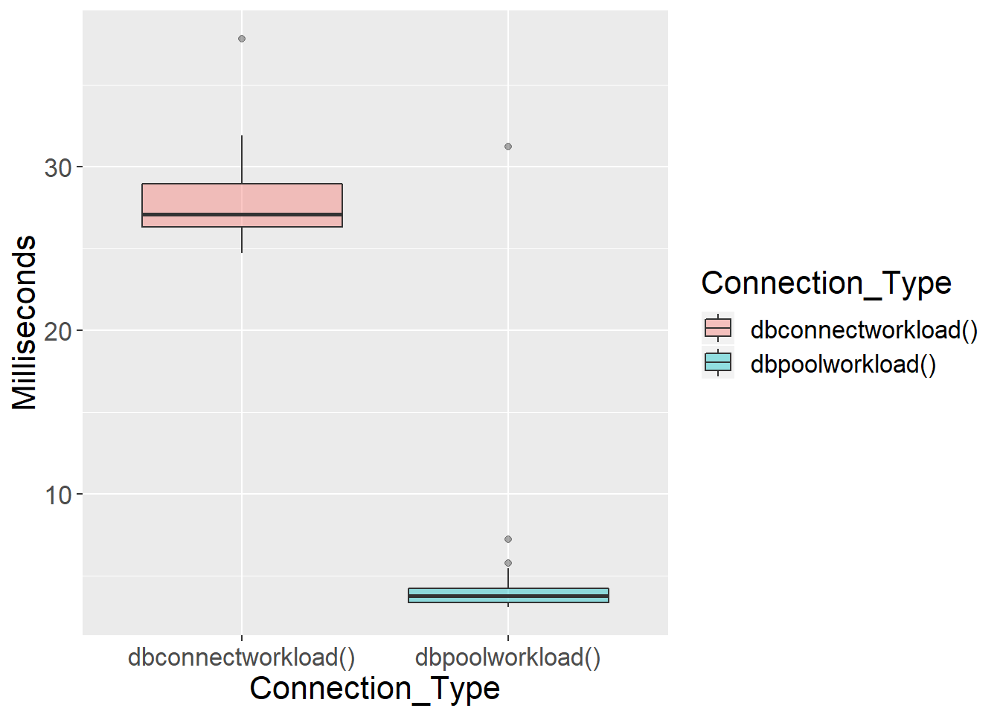

2.4 The pool Package
The pool package opens and closes connections automatically. R users establish a connection to a pool. From then on pool gives the query an idle connection or opens a new connection. Besides simplifying client code, pooled connections can also provide a performance boost. To illustrate, I wrote a sample workload consisting of three queries. Next, I wrote a function to execute the queries using dbConnect/dbDisconnect, and a function to execute the queries using a pool.
library(pool)
library(microbenchmark)
library(ggplot2)
queries <- c("SELECT Getdate()","Select Getdate()","Select Getdate()","Select Getdate()")
dbconnectworkload <- function() {
for(i in 1:length(queries)){
con <- dbConnect(odbc::odbc(),Driver= myDriver,Server = myServer
,Database = myDatabase,Trusted_Connection='yes')
dbGetQuery(con,queries[i])
dbDisconnect(con)
}
}
poolcon <- dbPool(odbc::odbc(),Driver= myDriver,Server = myServer
,Database = myDatabase,Trusted_Connection='yes')
dbpoolworkload <- function() {
for(i in 1:length(queries)){dbGetQuery(poolcon,queries[i])}
}
rs <- microbenchmark(dbconnectworkload()
,dbpoolworkload(),times = 100)
rs<-as.data.frame(rs)
rs$time <- rs$time/1000000
names(rs) <- c("Connection_Type","Milliseconds")
ggplot(rs, aes(x=Connection_Type, y=Milliseconds , fill=Connection_Type)) +
geom_boxplot(alpha=0.4) +
theme(text = element_text(size=16))
The pooled function connection appears to be faster. Profvis shows that most of the time spent in dbconnectworkload is on opening connections.
library(profvis)
profvis({dbconnectworkload ()})